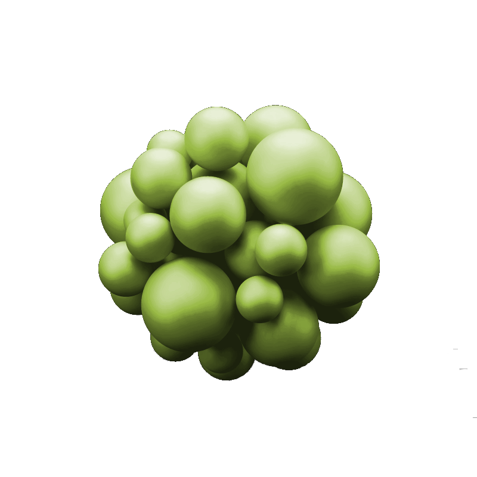

Theme: Altered States, Crisis and Opportunity
At Altered 2017 we want to explore crisis and our relationship to it as individuals and as communities, both local and global.
Conference Topics

Altered State Experiences
- Psychedelics (LSD, Psilocybin, DMT, Salvinorin A)
- Entheogens (MDMA, Ketamine)
- Ayahuasca and Plant Medicines
- Ibogaine
- Psychedelic Therapy
- Microdosing

Conscious Practices
- Alchemy (West and East)
- Ritual
- Tarot and Astrology
- Chaos Magick
- Lucid Dreaming
- Tantra
Culture and Society
- Plant Intelligence & Gaia Theory
- Contemporary Shamanism
- Ayahuasca, Native Populations and Appropriation
- Safe and Conscious Drug Practice
- Anthropology
- The Psychedelic Renaissance
Be a Part of Altered 2017
Our aim is to provide a platform to talk, share, open up and give something from your heart - present a talk, lead a workshop or ritual, help to market and promote the conference, secure sponsorship or join us in planning, organizing, promoting and setting up the event - we need your help and collaboration!
Programme
TBA
Location
TBA